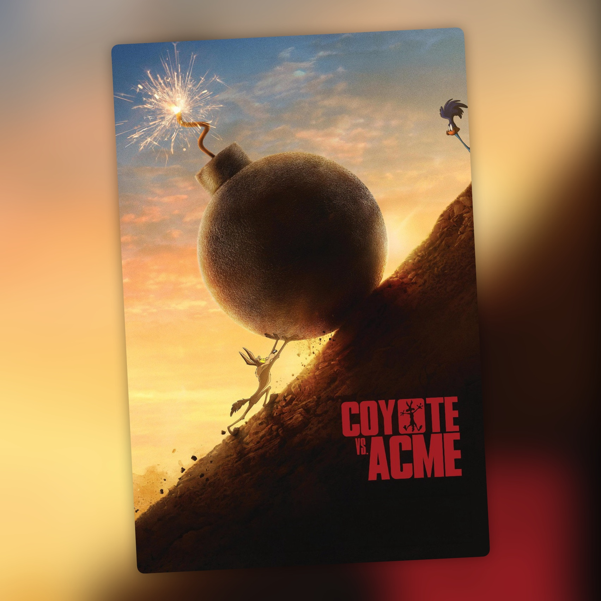

Coyote vs. Acme (2026)
Un juicio contra Acme que llegó por los pelos

La historia de Coyote vs. Acme empieza bastante antes de su estreno. La película estaba terminada desde 2023 y había pasado por pases de prueba con buenas reacciones del público, pero Warner Bros. decidió que no iba a estrenarla. Hizo cuentas y le salía mejor darla por perdida y ahorrarse impuestos que llevarla a los cines. La noticia sentó fatal. Actores, cineastas y seguidores de los Looney Tunes montaron una campaña para salvarla, y Warner acabó poniendo la película a la venta. En 2025 la compró Ketchup Entertainment por unos 50 millones de dólares y, después de casi tres años de espera, pudo estrenarse por fin en agosto de 2026 en Estados Unidos y en septiembre en España. Tiene bastante gracia: una película en la que el Coyote lleva a juicio a una gran compañía por venderle productos defectuosos estuvo a punto de quedarse en un cajón por decisión de otra gran compañía.
La película parte de una idea estupenda. Después de años persiguiendo al Correcaminos y sufriendo accidentes con los productos de Acme, el Coyote decide que ya está bien y demanda a la empresa. Para ello contrata a Kevin Avery (Will Forte), un abogado especializado en reclamaciones bastante poco importantes y que tampoco atraviesa su mejor momento profesional. Al otro lado está Buddy Crane (John Cena), el abogado de Acme y antiguo compañero de universidad de Kevin. Lo que empieza como una reclamación aparentemente sencilla acaba convirtiéndose en un juicio contra una compañía que tiene mucho que ocultar.
Las actuaciones son correctas. Will Forte encaja bien como ese abogado algo torpe que acaba implicándose en el caso más importante de su carrera, mientras John Cena se lo pasa bien dando vida al representante de Acme. Lana Condor, como Paige Avery, completa el reparto principal. La película también recupera a un buen puñado de personajes de los Looney Tunes, que aparecen integrados en la historia y participan en el juicio. Hay bastantes guiños para quienes conocen los dibujos de toda la vida, aunque no hace falta estar pendiente de cada referencia para seguir la trama.
Uno de los aspectos que mejor funcionan es la integración de los dibujos animados con las imágenes de acción real. Los personajes se mueven por los escenarios, interactúan con los actores y forman parte de las escenas sin que resulte extraño verlos compartir plano. Es una mezcla que tiene sus dificultades, pero Dave Green consigue que todo encaje bastante bien. El director ya había trabajado con efectos visuales y aventuras familiares en películas como Earth to Echo y Ninja Turtles: Fuera de las sombras, y aquí vuelve a moverse entre personajes reales y elementos digitales.
El guion corre a cargo de Samy Burch, con James Gunn y Jeremy Slater acreditados en la historia. Burch había escrito Secretos de un escándalo, mientras que Gunn, además de productor de la película, participó en el desarrollo del proyecto. La idea original procede de un artículo satírico de Ian Frazier publicado en The New Yorker en 1990, que imaginaba al Coyote reclamando responsabilidades a Acme por todos los accidentes provocados por sus productos. La premisa daba bastante juego para convertir una sucesión de gags de dibujos animados en una comedia judicial.
Al final, Coyote vs. Acme es una película entretenida, con una buena mezcla de animación y acción real y un reparto que cumple. La historia tiene suficiente gracia para mantener el interés y resulta agradable volver a encontrarse con estos personajes en una aventura distinta a sus habituales persecuciones. Pero tampoco me ha parecido nada especialmente memorable. Es un pasatiempo correcto, de esos que se ven a gusto y que se olvidan sin demasiado esfuerzo cuando terminan. Después de todo lo que tuvo que pasar para llegar a los cines, casi parece que el Coyote ha tenido que correr más que nunca para conseguirlo.
Ficha técnica
- Título original: Coyote vs. Acme
- Dirección: Dave Green
- Guion: Samy Burch (historia de Samy Burch, James Gunn y Jeremy Slater)
- Reparto principal: Will Forte, John Cena, Lana Condor, Tone Bell, P. J. Byrne y Eric Bauza (voces)
- Año: 2026
- Duración: 103 min
- Plataforma en España: en cines